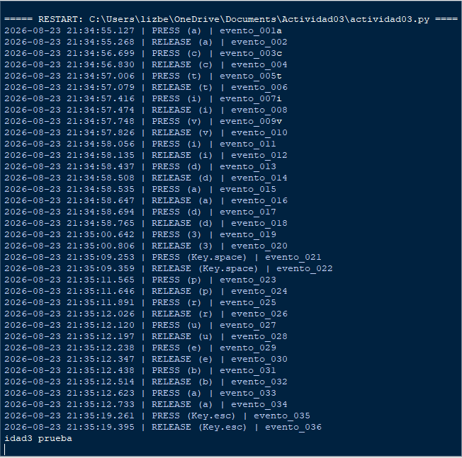

01 // Objetivo de la Práctica
Implementar y analizar, en un entorno de laboratorio controlado, una simulación de Ingeniería social mediante Social-Engineer Toolkit (SET), utilizando una página web ficticia para comprender el funcionamiento de una técnica de captura de información y reconocer los elementos que permiten identificar un intento de phishing.
02 // Entorno de Laboratorio
Código Base
Listener de teclado con la librería pynput (on_press / on_release) provisto en clase.
Enfoque Defensivo
Comprensión técnica de la captura de entrada y de los controles defensivos que la detectan o mitigan.
03 // Detalle de Implementación
1. Persistencia del Registro
Cada evento se registra en un archivo local (keylog.txt) usando el modo de apertura "a" (append) con la construcción with open(...) as f. El archivo se abre, se escribe una línea y se cierra en cada evento individual, evitando la pérdida de información ante cierres abruptos.
with open(LOG_FILE, "a", encoding="utf-8") as f:
f.write(log_entry)
2. Asociación Temporal (Timestamps)
La marca de tiempo se obtiene con datetime.datetime.now().strftime("%Y-%m-%d %H:%M:%S.%f")[:-3], recortando los microsegundos a milisegundos. Un contador global asigna además un identificador secuencial a cada evento (evento_001, evento_002…), permitiendo reconstruir el orden exacto.
2026-08-18 12:15:04.215 | PRESS | evento_001
04 // Evidencias de Ejecución


05 // Código Fuente e Informe
Consulta el código fuente completo e informe técnico generado para esta actividad:
06 // Conclusiones Técnico-Éticas
El uso de la librería pynput permite interactuar de manera directa con los ganchos de eventos (event hooks) del sistema operativo, logrando capturar las interrupciones de hardware mediante funciones tipo callback.
La incorporación de marcas de tiempo con precisión en milisegundos y secuencias numeradas (evento_00X) resulta fundamental para correlacionar el orden temporal de las entradas, permitiendo analizar patrones de cadencia de tecleo (keystroke dynamics).
La interceptación de datos de entrada sin el debido consentimiento de los usuarios expone información altamente confidencial, incluyendo credenciales de acceso, conversaciones privadas y datos financieros.
El desarrollo e implementación de este tipo de herramientas debe restringirse exclusivamente al ámbito educativo, a la investigación defensiva y a pruebas de penetración (pentesting) bajo un acuerdo de alcance formalmente autorizado.